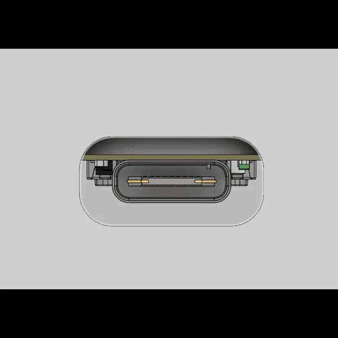
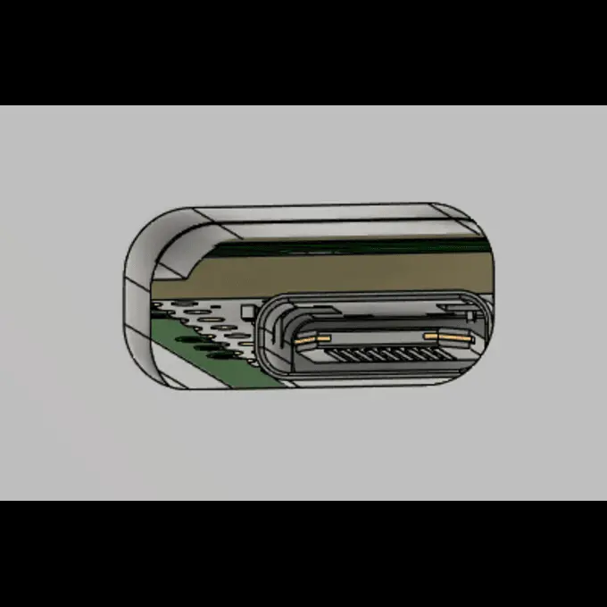
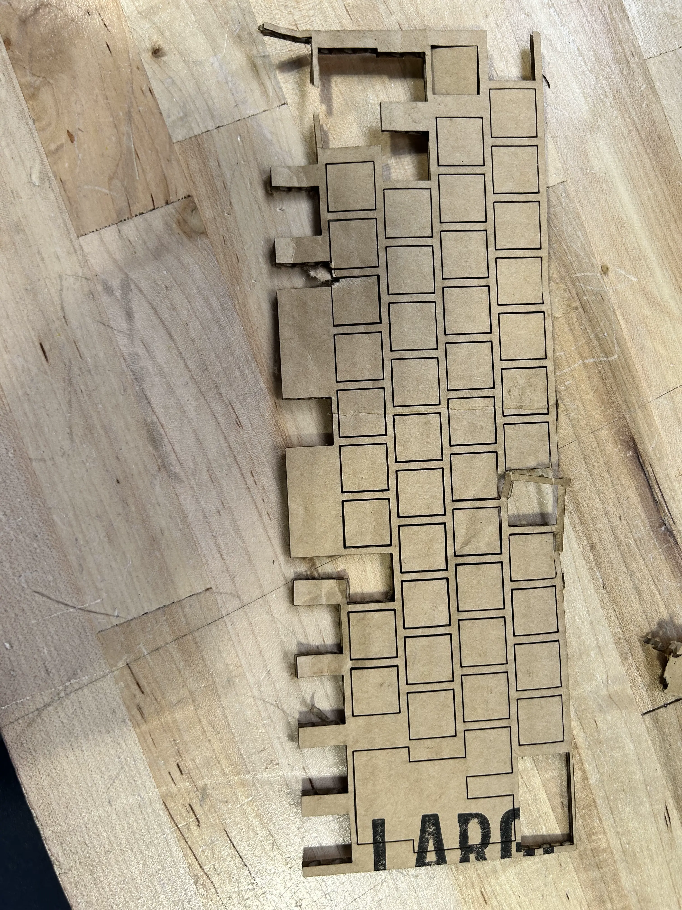
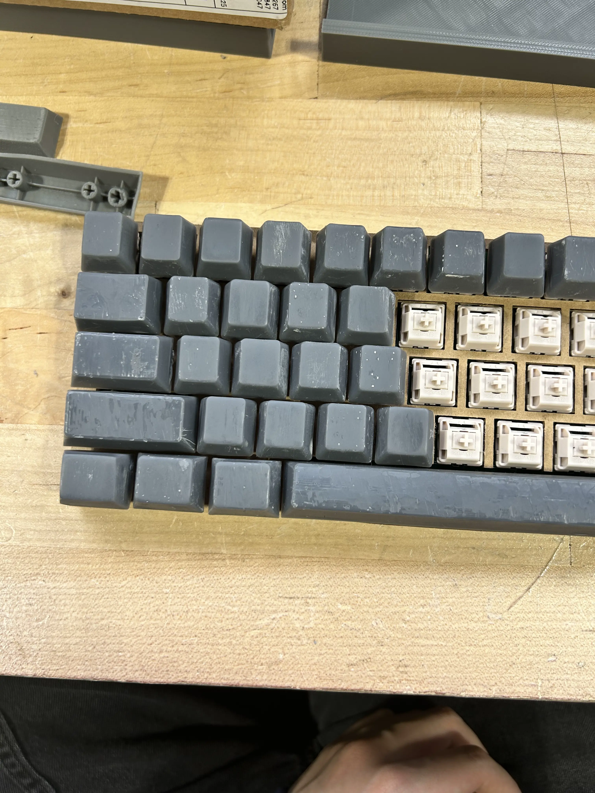
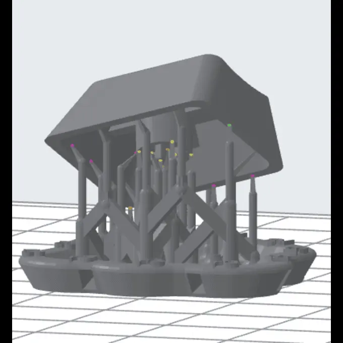

junior week mar. 12, 2026
keyboard updates
fixed some errors before printing everything
first problem was the friction fit pad and the pcb plate colliding
because of this, i decreased the size of the pcb plate by a little
the next problem was collision between the case and the friction fit pad, creating a fit that wouldn't allow the usb cable to go all the way in

fixing this was a bit annoying because i tried using part the design for the first time, so i had to keep jumping back and forth to create the hole in the friction fit pad
eventually got it fixed though.

with all of this fixed, i started printing the case (forgot to take a photo)
worked out fine. can't really test the case without the friction fit pad, which needed to be printed with tpu + was way too big for the 3d printers, so i'll have to figure out a workaround for this
i also did another testcut with the new pcb plate, and the lasercutter kinda didn't cut through.

slightly annoying, but i just cut the rest of the holes (destroying it slightly in the process) and then tested the fit. worked out well
i then started working on keycaps again, and after a lot of time thinking, i decided to just have the r2 + r1 keycaps be the exact same as the r3 keycaps.

i also tried printing the keycaps in a different orientation, as last time the keys were printed on the top to ensure the tolerance woudl fit, but would create a terrible finish on the top due to leaving holes from the supports

manually added some more support on the hole area. hoping it works out instead so i don't have to sand and stuff
however, i do have a bunch that are messed up with holes and stuff, so i grabbed a brush and started "painting" a layer over the top with the resin. they're currently curing, so hopefully they turn out right.
i also tried to figure out the problem with the spacebar.
i have two spacebars (both from the same model) yet they have different problems.
in the first image, the spacebar lifts on the left side. in the second image, the spacebar lifts on the right side.
this creates a problem where typing on the opposide side / middle of the spacebar will lift it up, rendering it unusable.
not too sure why it happens. the bambulabs printer didn't have this issue, so mayybe it's just the resin printer?
gonna reprint one more spacebar. hopefully it works
also spent a lot of time looking at broken keyboards to harvest the keycaps. realized that wouldn't work because of the shift error i mentioned like 2 months ago.